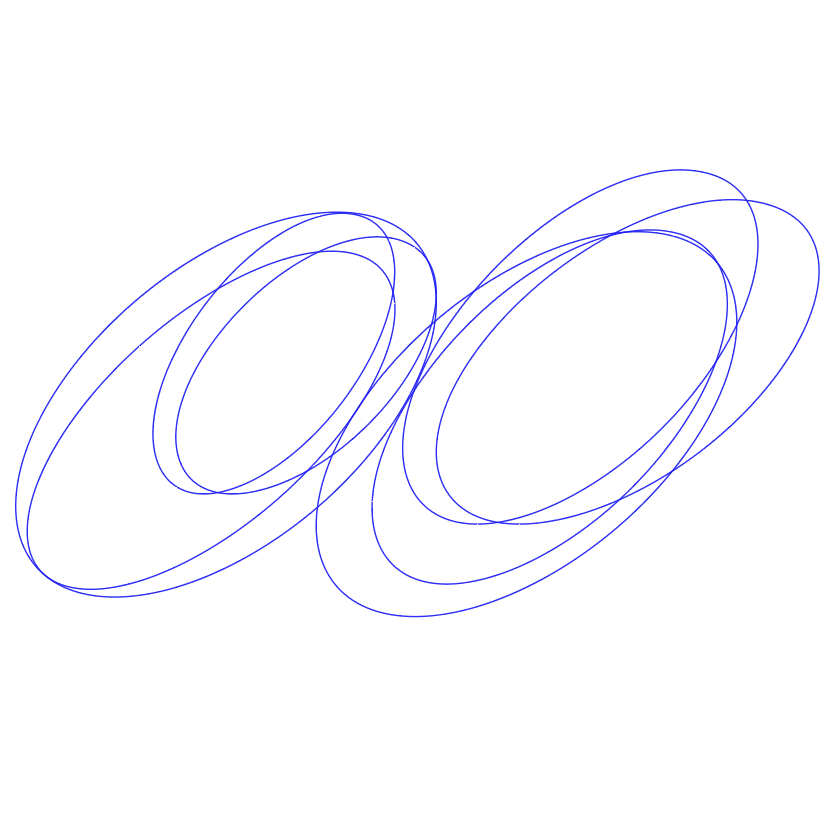
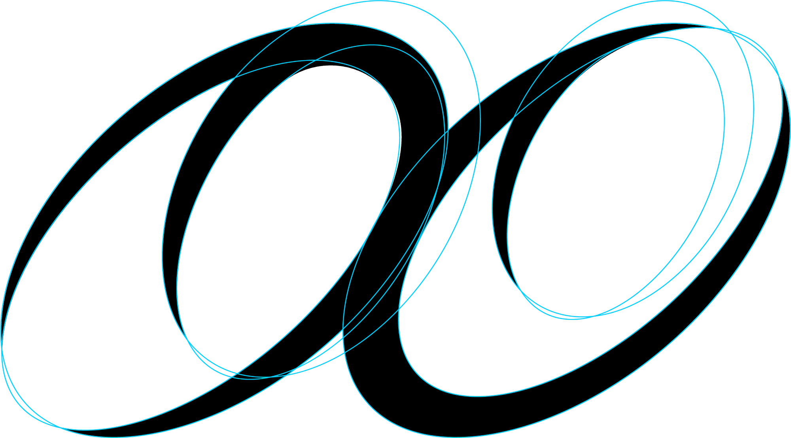
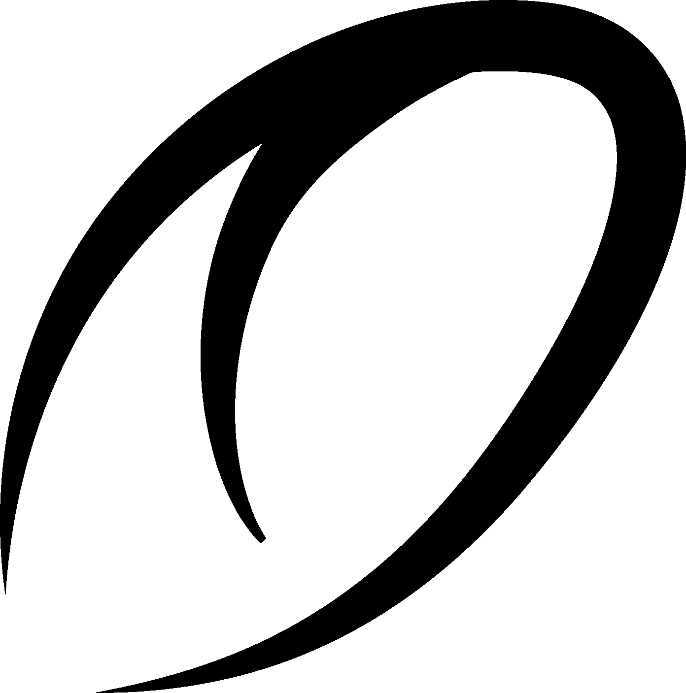
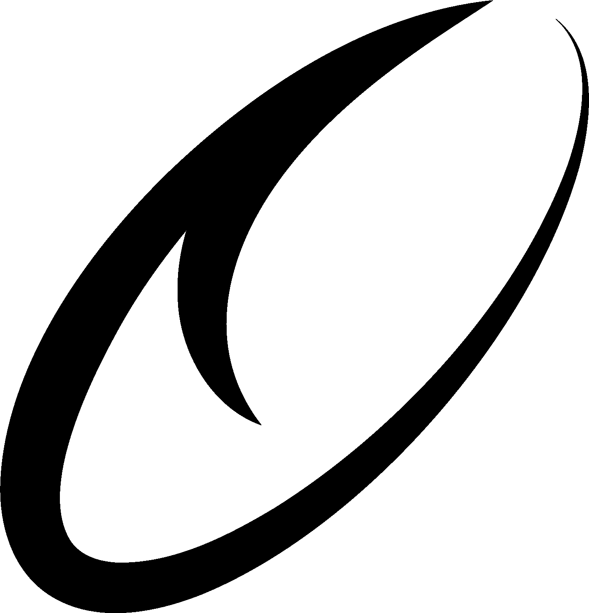
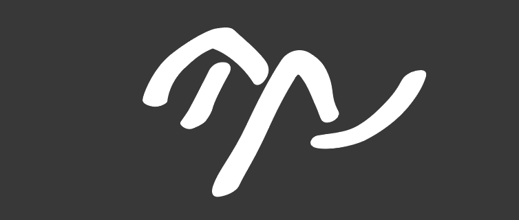
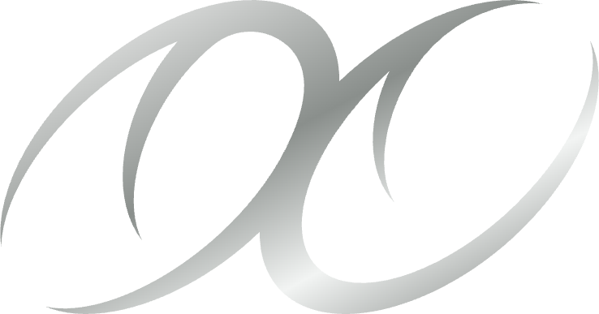
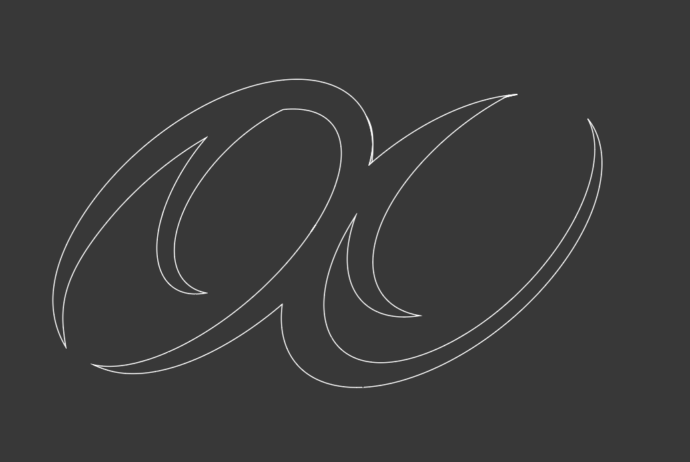

CHART 04 — SELF BRANDING
KHUN studio So, Revive
Brand Revival Studio — RVB, Re:vibe the Brand
소통하고 생각하는 디자이너의 브랜드 스튜디오. 먼저 귀 기울이고 깊이 생각하는 자세에서 출발해, 멈춘 브랜드에 새로운 진동을 불어넣어 다시 뛰게 합니다. ‘소생’이라는 이름에서 로고와 심볼, 이 사이트의 모든 장면까지 하나의 체계로 만들었습니다.
- 01문제
방송 · 패션 · 마케팅 · 공군을 거친 넓은 이력이, 자칫 여러 일을 조금씩 한 사람으로 읽힐 수 있었습니다.
- 02판단
모든 일의 공통점인 ‘멈춘 브랜드를 다시 뛰게 하는 일’을 ‘소생’이라는 한 단어로 정의했습니다.
- 03실행
소생에서 심볼을 도출하고, 진동 · 바퀴 · 쿤 · x의 의미를 담은 아이덴티티 가이드와 모션, 이 사이트 전체를 하나의 세계관으로 설계했습니다.
- 04결과
차트 · 바이탈 · Code Blue로 이어지는 일관된 경험 안에서, 각 프로젝트를 하나의 관점으로 읽히게 했습니다.
Origin
소생 [revive]소통하고 생각하는,
그래서 소생
‘소생’은 되살아나다, 활기를 되찾다라는 뜻이자, 소통하고 생각하는 디자이너라는 저의 다른 이름입니다. 먼저 듣고 깊이 생각하는 그 자세에서 브랜드를 소생시키는 새로운 진동이 시작되고, 그 진동이 멈춘 브랜드를 다시 뛰게 합니다. 그 과정을 그대로 로고에 담았습니다.
멈춘 0의 상태에서 눈을 뜨고, 두 시선이 마주 보며 얽혀 하나의 표식이 됩니다. 서로를 바라보는 두 눈, 그리고 끝없이 이어지는 진동.

- 01FLATLINE
- 03EYES OPEN
- 05RE:VIBE
- 06REVIVED
Identity Guide
THE KHUN MARK눈동자의 궤적이
진동이 되고, 바퀴가 되고, 쿤이 되고, x가 되기까지
두 눈동자가 굴러가는 모습을 타원으로 와라락 그려 보던 궤적에서 심볼이 시작되었습니다. 겹겹이 겹친 타원은 멈춘 브랜드를 흔드는 새로운 진동이자, 앞으로 굴러가게 하는 바퀴 같은 원동력으로 읽힙니다.
그리고 이 형태를 손으로 풀어 쓰면 한글 ‘쿤’이 됩니다. 동시에 두 획이 엇갈리는 모습은 함수 속 미지수 x를 닮았습니다. 아직 답이 정해지지 않은 브랜드에 어떤 값이 들어가느냐에 따라 결과가 달라지듯, 소통하고 생각한 만큼 브랜드의 답이 만들어진다는 뜻을 담았습니다.
하나의 표식 안에 진동, 원동력, 이름, 그리고 가능성을 함께 담았습니다.
01 CONSTRUCTION


02 MEANING
- VIBRATION진동멈춘 브랜드를 흔드는 새로운 떨림


- DRIVE바퀴브랜드를 다시 굴러가게 하는 원동력
- NAME쿤풀어 쓰면 드러나는 이름



- f(UNKNOWNx아직 정해지지 않은 브랜드의 값)
03 VARIATION
- CHROME메인 · 화면용

- OUTLINE라인 · 패턴

- SOLID BLACK인쇄 · 밝은 바탕
- SOLID WHITE어두운 바탕
04 COLOR CODE
- PRIMARY그린심볼 · 심전도 · 강조
- HEX
- #3DFFA2
- RGB
- 61 255 162
- CMYK
- 76 0 36 0
- PRIMARY · LIGHT다크 그린밝은 화면의 강조
- HEX
- #0A8F55
- RGB
- 10 143 85
- CMYK
- 93 0 41 44
- BASE블랙어두운 화면 바탕
- HEX
- #020A06
- RGB
- 2 10 6
- CMYK
- 80 0 40 96
- BASE아이보리밝은 화면 바탕
- HEX
- #F4F2EC
- RGB
- 244 242 236
- CMYK
- 0 1 3 4
- TEXT차콜본문 · 로고
- HEX
- #17211B
- RGB
- 23 33 27
- CMYK
- 30 0 18 87
- SIGNAL레드멈춤 · 경고 신호
- HEX
- #FF4D5E
- RGB
- 255 77 94
- CMYK
- 0 70 63 0
Brand Symbol
THE REVIVE MARK-
01 — FLATLINE · CORE
Core
멈춤이자 0의 상태. 단단한 코어 안에서 쿤의 심볼이 천천히 돌며 깨어날 순간을 기다립니다.
-
03 — EYES OPEN
Eyes Open
로고의 두 고리가 각자 빙글빙글 돌며 풀려, 두 개의 눈으로 깨어납니다. 소통하고 생각하는 두 시선.
-
05 — RE:VIBE
Re:vibe
로고의 윤곽이 여러 겹으로 인피니트 심볼처럼 요동칩니다. 멈춘 브랜드에 보내는 새로운 진동.